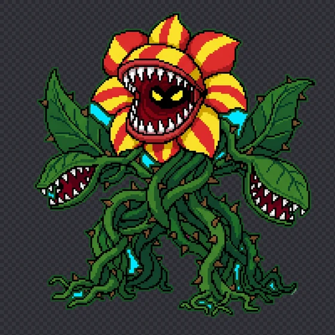
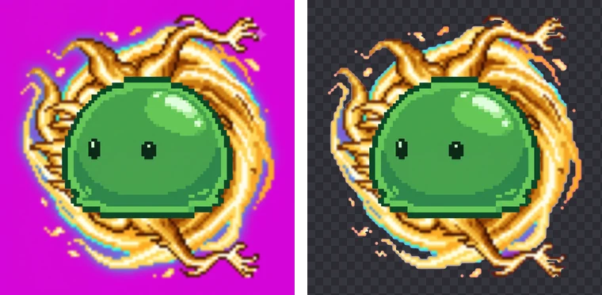

AI 배경 제거와 색 기반 배경 제거, 언제 무엇을 쓸까
배경 제거 도구는 크게 두 갈래입니다. remove.bg처럼 AI가 사진 속 주인공을 알아보고 오려 내는 방식, 그리고 방송의 크로마키처럼 정해진 배경색을 지우는 방식입니다. BGPeel은 뒤쪽입니다. 어느 쪽이 더 좋다기보다 맞는 이미지가 다르기 때문에, 원리와 실제 결과를 놓고 언제 무엇을 쓰면 좋은지 정리했습니다.
두 방식은 무엇을 보는가
AI 방식은 수많은 사진으로 학습한 모델이 이미지 전체를 보고 “어디가 사람이고, 어디가 제품이고, 어디가 배경인지”를 추정합니다. 결과는 픽셀마다 물체일 확률을 담은 마스크입니다. 배경이 무엇이든 상관없고, 숲에서 찍은 사람 사진에서도 사람을 오려 낼 수 있습니다. remove.bg 같은 웹 서비스, 사진 편집 앱의 ‘배경 제거’, 스마트폰의 ‘피사체 들어올리기’, 그리고 직접 설치해 쓰는 rembg 같은 오픈소스 도구가 이 방식입니다.
색 기반 방식은 그림의 의미를 보지 않습니다. 대신 배경색을 알고 있다는 점을 이용해, 픽셀마다 그 색이 얼마나 섞여 있는지를 계산합니다. 배경이 정해진 단색이어야 한다는 조건이 붙는 대신, 계산이 정확하고 결과가 늘 같습니다. 영화의 초록 스크린, 그리고 BGPeel이 이 방식입니다. 원리는 가장자리 색 번짐이 생기는 이유에서 자세히 설명했습니다.
한눈에 비교
| AI 방식 | 색 기반 방식 (BGPeel) | |
|---|---|---|
| 판단 기준 | 모양과 의미(무엇이 주인공인가) | 색(배경색이 얼마나 섞였나) |
| 배경 조건 | 아무 배경이나 | 단색 배경 |
| 잘 맞는 이미지 | 사람·제품·동물 사진 | AI로 만든 스프라이트·아이콘, 크로마키 그림 |
| 가장자리 색 | 마스크로 오려 냄, 배경색이 묻어날 수 있음 | 섞인 배경색을 빼서 원래 색으로 되돌림 |
| 물체 사이 틈 | 학습에 따라 다름 | 배경색이면 둘러싸여 있어도 지움 |
| 여러 장의 일관성 | 장마다 판단이 달라질 수 있음 | 같은 설정이면 같은 규칙 |
| 처리 위치 | 서비스 서버인 경우가 많음(로컬 도구도 있음) | 브라우저 안(업로드 없음) |
색 기반이 강한 곳 1: 둘러싸인 배경
덩굴이 얽힌 식물 몬스터를 BGPeel로 처리한 결과를 보면, 이미지 테두리와 이어지지 않고 덩굴과 잎에 완전히 둘러싸인 배경 구멍이 16개 있었습니다. 그중 12개는 100픽셀이 넘었고, 모두 합치면 26,727픽셀, 가장 큰 것은 7,858픽셀이었습니다. 아래 그림에서 하늘색으로 칠한 부분입니다.

색 기반 방식은 “이 색이 배경색인가”만 보므로, 물체에 둘러싸인 틈이라도 배경색이면 지웁니다. BGPeel은 테두리에서 이어진 배경을 먼저 지운 뒤, 둘러싸인 곳 중 배경이 반 이상인 픽셀에서 다시 시작해 배경색이 섞인 픽셀로만 퍼지며 구멍을 지웁니다. 물체 안의 흰 하이라이트처럼 배경색이 섞이지 않은 부분으로는 퍼지지 않습니다. 모양으로 판단하는 방식은 좁은 틈을 물체 일부로 칠하는 일이 있어서, 덩굴·털·철망처럼 틈이 많은 물체라면 결과를 꼭 확대해서 확인하는 것이 좋습니다.
색 기반이 강한 곳 2: 도트 경계와 같은 규칙
도트 그림은 경계가 픽셀 단위로 딱 떨어집니다. 색 기반 방식은 픽셀마다 계산하므로 결과 마스크가 도트 모양을 그대로 따라갑니다. 또 같은 설정이면 같은 입력에 늘 같은 결과가 나오므로, 수십 장짜리 스프라이트 세트나 애니메이션 프레임처럼 가장자리 처리가 장마다 같아야 하는 작업에 맞습니다. AI 모델은 장마다 판단이 조금씩 달라질 수 있어, 프레임을 이어 볼 때 테두리가 깜박이는 원인이 되기도 합니다.
색 기반의 한계: 주인공이 누구인지 모른다
반대로 색 기반 방식은 무엇이 주인공인지 모릅니다. 실험으로 슬라임 캐릭터를 무늬가 있는 배경 위에 얹었습니다. 배경은 정령 그림을 흐리게 하고 돌려 만든 것이라 마젠타 사이로 금색 무늬가 지나갑니다.

BGPeel은 마젠타 부분은 지웠지만, 원래 배경이었던 영역의 40%가 금색 무늬로 남았습니다. 색으로만 보면 그 무늬는 배경색이 아니기 때문입니다. 사람이 보면 당연히 배경인 부분도, 색이 다르면 물체가 됩니다. 이런 이미지, 즉 실제 사진이나 배경이 복잡한 그림은 AI 방식이 맞습니다. 또 물체가 배경색과 같은 색을 쓰고 외곽선도 없다면 색 기반 방식은 물체를 깎습니다(배경색 비교 실험 참고).
두 방식을 이어 쓰는 법
두 방식은 경쟁만 하는 관계가 아닙니다. 배경이 복잡한 이미지를 스프라이트처럼 깔끔하게 쓰고 싶다면, 먼저 대화로 이미지를 고칠 수 있는 AI 도구에 “물체는 그대로 두고 배경만 단색 마젠타(#FF00FF)로 바꿔 줘”라고 요청해 배경을 단색으로 바꾸고, 그다음 색 기반 도구로 지우는 방법이 있습니다. 어려운 일, 즉 주인공을 알아보는 일은 AI가 하고, 정밀한 일, 즉 가장자리 색을 되돌리는 일은 색 계산이 맡는 셈입니다. 다만 AI가 배경을 바꾸면서 물체의 세부를 조금씩 다시 그리는 경우가 있으니, 원본과 꼭 비교해 보세요. 로고나 글자처럼 정확해야 하는 부분이 있다면 이 방법은 피하는 편이 좋습니다.
무엇을 고를까
- 배경이 있는 사진(사람, 제품, 동물, 풍경 속 물체) → AI 방식.
- 배경색을 직접 정할 수 있는 이미지(AI로 만드는 스프라이트·아이콘·이모티콘, 크로마키 촬영) → 색 기반 방식. 단색 배경으로 만들기만 하면 가장자리 색까지 정확하게 처리됩니다.
- 수십 장을 같은 기준으로 처리해야 할 때 → 색 기반 방식이 결과가 일정합니다.
- 업로드가 꺼려지는 이미지 → 브라우저 안에서 처리하는 도구나 컴퓨터에 설치하는 도구. AI 방식도 rembg처럼 로컬에서 돌리는 도구가 있습니다.
- 둘 다 애매할 때 → 이미지 생성 단계에서 배경을 단색으로 바꿀 수 있는지부터 보세요. 배경만 다시 만들 수 있다면 색 기반 방식이 대부분 더 깨끗합니다.
비용도 고려할 만합니다. 서버에서 AI 모델을 돌리는 서비스는 무료로는 해상도나 횟수가 제한되는 경우가 많고, 색 기반 계산은 가벼워서 브라우저에서도 2048px 이미지 한 장을 보통 1초 안팎에 처리합니다. BGPeel이 무료로 업로드 없이 동작할 수 있는 이유이기도 합니다.